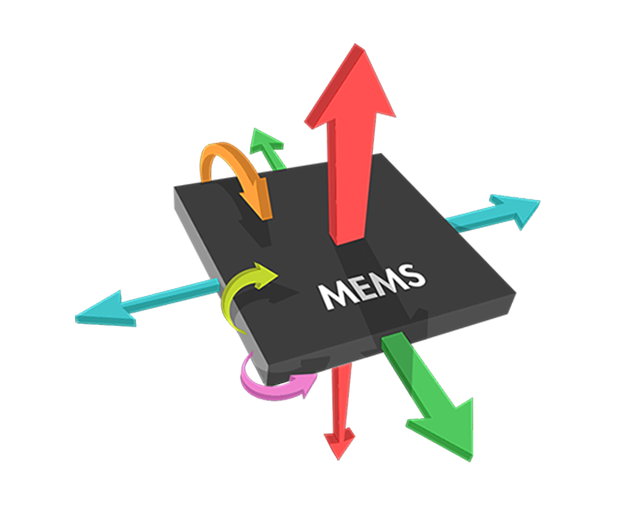

智能化工业监测方案
点检是工厂、车间中的一项日常制度，目的是掌握设备状况，预防事故发生。传统的点检工作由人工来完成，现利用新型传感技术和无线通信手段，推出一种智能化的工业监测方案。

本方案监测对象为电机、风机、水泵、变速器、空压机、升降机等机械设备。
超精密的MEMS传感技术
MEMS传感器是采用微电子和微机械加工技术制造出来的新型传感器，与传统传感器相比，它具有体积小、重量轻、成本低、功耗低、可靠性高等特点。
加速度计有多种方式安装在目标设备上的方式，如螺栓固定、粘接剂固定、蜡固定、磁铁固定等。
分布式的无线传感器网络
传感器和无线模块构成一个传感单元。传感器采集数据，无线模块将数据传输到本地网关，本地网关汇集网络中所有的传感器数据，并上传至云端服务器。

无线模块支持433MHz、低功耗蓝牙等通信制式。无线通信的好处是避免了现场布线，施工成本低，可以轻易地部署成百上千个传感单元，形成分布式的传感器网络。
轻松掌握设备的工作状态
云端服务器提供电脑、平板、手机等多平台操作支持。当发现设备数据满足特定阈值时，云端通过微信、邮件等方式通知管理员，及时预防设备故障的发生。
云端还提供了丰富的设备故障分析手段，如频谱变换、倒谱、差谱、共振解调、时域辅助等。

总之，传统的点检工作需要大量的人力物力，人为因素对测量结果也有不确定性影响。本方案的传感单元定期自动完成监测任务，测量结果准确，遇到异常及时报警，充分降低故障发生概率。